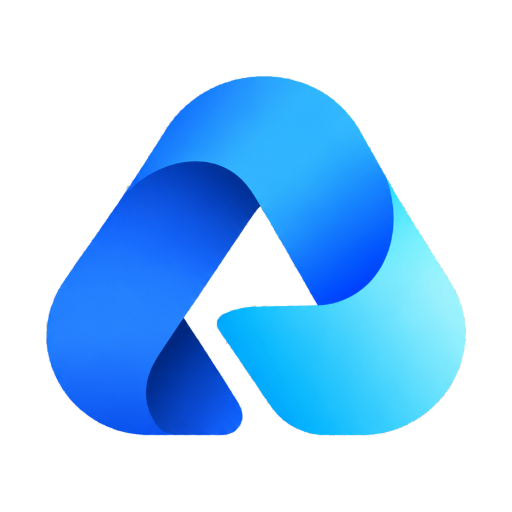

Aihub
正在准备标签页…
设置 · 服务管理
填名字 + 网址即可新增一个标签，无需改代码或重新打包。每个服务的登录态独立保存在本地。
添加
外观主题
深色 / 浅色，或者跟随 Windows 的深浅色设置。只影响本应用自己的标签栏和设置面板。
深色
浅色
跟随系统
全局快捷键唤出
系统级快捷键：不管当前前台是哪个程序（哪怕在别的程序的全屏窗口里）按下它都能把窗口唤到最前， 优先级高于应用内快捷键；再按一次收起。注册不上会在这里写明原因。
启用
恢复默认
唤出时强制置顶（最高优先级）：用最高层级压过其它置顶窗口和别的程序的全屏； 窗口让出前台时自动取消，不会一直压着别人
显示托盘图标：窗口收进后台后仍然有一个能点回来的入口
点关闭按钮时收进后台而不是退出，这样快捷键随时能唤回（真正退出请用托盘图标的右键菜单）
后台标签自动休眠
闲置超过设定时间的后台标签会释放掉它的页面进程（相当于省下一个浏览器标签的内存）， 点回去自动从原来的位置恢复。分屏里正显示的、正在出声的、正在加载的、 输入框里有没发出去内容的标签都不会被休眠。
15 分钟
30 分钟
2 小时
不休眠
启动时预加载所有标签
默认关闭，启动时只加载标签栏当前要显示的那几栏。开启后会把所有标签的页面都真实加载一遍， 标签栏上就能看到各站点自己的标题——logo 不开这个也有。代价是启动即多个渲染进程和多次真实请求。
账号迁移
导出各服务的登录状态成一个文件，在另一台设备导入即可继续用，不用重新登录
导出登录信息
导入登录信息
文件里是 Cookie 和本地存储（等同账号凭证），只在自己信任的设备之间传递；填了密码就用 AES-256-GCM 加密。